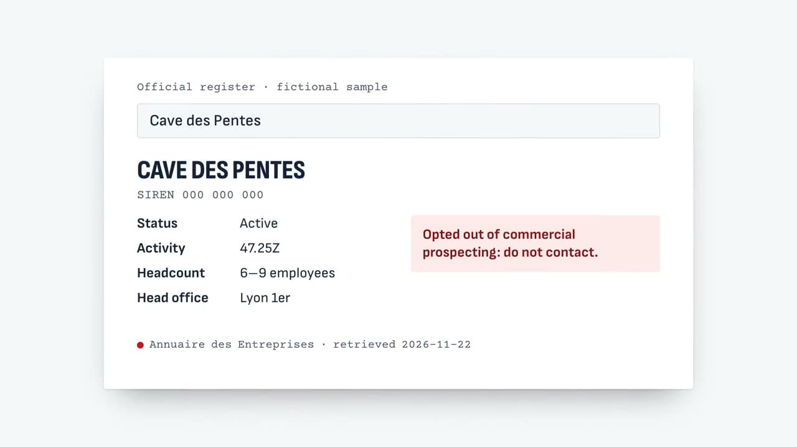
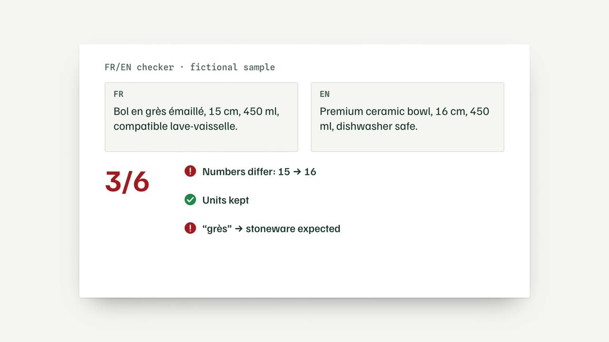
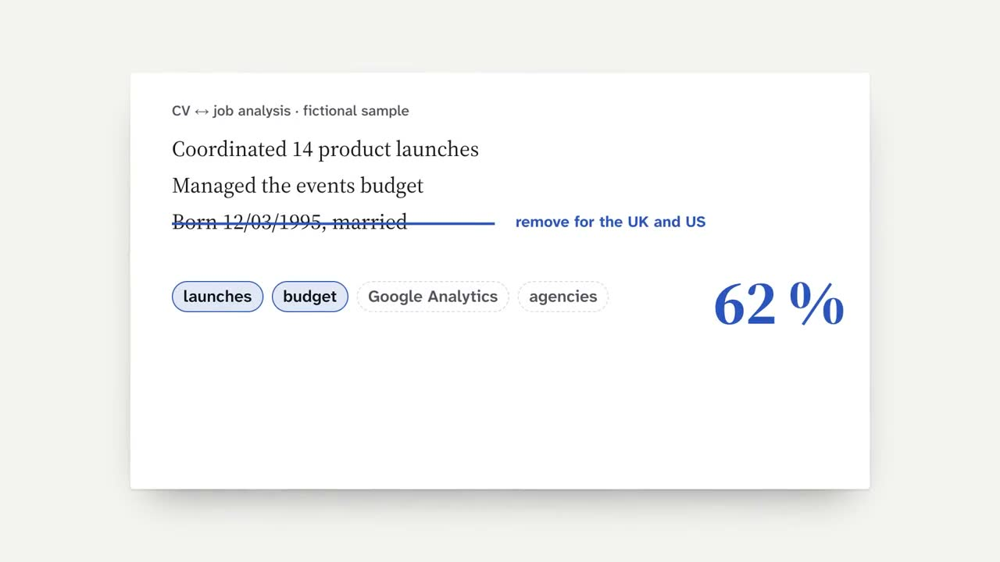
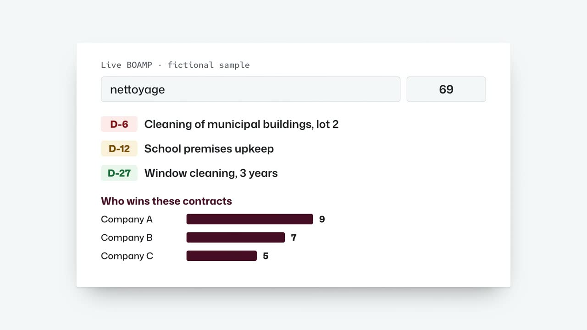

ATLAS Studio · fixed-price B2B services
Seven B2B services built on official sources, not guesses.
Each service has its own offer, published prices and a full sample to download. A person reviews every deliverable; facts, amounts and files are checked by scripts, not by AI.


Know who to contact, and why — with the evidence.
Qualified B2B research
Pilotfrom USD 290
Try the free tool
A bilingual catalogue that stays true to your products.
FR/EN e-commerce catalogues
Pilotfrom USD 180
Try the free tool

An automation you can follow, stop and resume.
Reliable admin automations
Diagnostic + prototypefrom USD 350
Try the free tool

An application true to your career — one you can defend.
FR/EN job applications
Application packfrom USD 340
Try the free tool

The French public contracts that fit you, before the deadline.
French public tenders: watch and bids
30-day watchfrom USD 190
Try the free tool
Know which French client is in trouble before they stop paying.
French client credit risk and claims
Client risk auditfrom USD 190
Try the free tool
Your invoices ready for mandatory French e-invoicing.
French e-invoicing compliance
20-invoice auditfrom USD 190
Try the free tool
10 seconds
Which service fits your need?
The house rule
- A complete, downloadable sample for every service.
- Published prices and written limits before any order.
- Facts, numbers and files checked by deterministic scripts.
- A person reviews every deliverable before delivery; 14-day feedback window.
AI and human review
AI models help prepare drafts. Every delivered item is checked by a person, and fact, amount and file checks run as deterministic scripts — not by AI. Your project data is not sent to any third-party AI service.
14-day feedback window after delivery. Acknowledgement within 2 business days (UTC). Our mistakes are fixed at no cost; a new target or a new request gets a separate quote.
FAQ
What is ATLAS Studio?
A studio selling seven fixed-price B2B services: SignalDesk (sourced B2B research), Localoom (French–English e-commerce catalogues), FlowPatch (admin automation) CareerLift (bilingual CVs and applications) Soumissio (French public tenders), Solvaro (client credit risk and claims) and Factelio (French e-invoicing). Each service has its own page, prices and a complete sample.
How are prices set?
They are published in US dollars on each service page. Fixed-price options get an automatic quote at the listed price; the others are quoted after reading the brief. Card payment (Stripe) only happens after you accept the quote.
Does AI do the work?
AI models prepare drafts, but nothing is delivered without human review. Facts, numbers and files are checked by deterministic scripts: a figure that is not in the client’s data is rejected.
Where is my data processed?
The database and files are hosted by Supabase in the Paris region. Drafts are prepared on Kaggle machines in a private workspace that is erased at the end of each session. Details are in the privacy policy.
What if the result is not right?
Every delivery opens a 14-day feedback window. If a brief falls outside an option’s scope, we write to you before any work and refund in full.